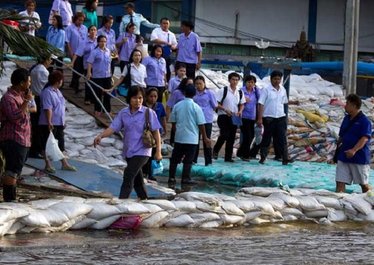

Cara mengatasi banjir juga dapat dilakukan dengan menumpuk karung
pasir di pinggir sungai ataupun selokan. Apabila menerapkan cara
seperti ini, air tidak langsung meluap ke daratan. Akan tetapi
menyerap ke pasir terlebih dahulu, sehingga pergerakannya ke
pemukiman jadi lebih lambat karena terdapat penghalang tersebut,
maka gunakanlah karung berisi pasir penuh, usahakan tidak bolong.
Supaya air tidak mudah merembes. Letakkan beberapa tumpuk sesuai
kebutuhan di sepanjang sungai maupun selokan yang mudah meluap
airnya.
Meski tampak sederhana, membuat tanggul dengan kantung-kantung
berisi pasir terbukti efektif menghalau air masuk ke dalam rumah.
Sebenarnya, tanggul berfungsi untuk mengalihkan aliran air. Meski
sementara, air tidak bisa masuk ke dalam rumah. Akan tetapi,
karena sifatnya sementara, tetap saja air tersebut pun harus
dialirkan melalui selokan. Agar upaya pencegahan banjir efektif,
gunakan metode yang tepat. Metode tepat tidak hanya menghemat
waktu, namun juga mampu membuat pekerjaan lebih efektif.
Terkait pembuatan tanggul di depan rumah, ada baiknya
memperhatikan metode yang dirilis California Department of Water
Resources dan California Conservation Corps. Kedua lembaga
tersebut, memberikan instruksi lengkap mengenai cara pembuatan
tanggul. Anda hanya perlu mengisi karung dengan pasir atau tanah
dan menempatkannya dengan tepat. Membuat tanggul setidaknya
membutuhkan dua orang. Satu orang untuk memegang karung agar tetap
terbuka, sementara satu orang lainnya memasukkan pasir ke dalam
karung. Isilah hanya sepertiga karung. Usahakan menggunakan karung
goni dengan anyaman rekat. Lipat sisa karung yang tidak terisi
menjadi bentuk segitiga. Hal ini membuat pasir tidak mudah bocor.
Kemudian, tata karung-karung tersebut dan pastikan Anda membuat
karung-karung tersebut saling tumpang tindih. Selain itu, pastikan
juga sisi yang terlipat (yang tidak terbuka) menghadap arah datang
air. Tindih bagian lipatan dengan karung lain, dan ulangi hingga
mencapai ketinggian yang Anda inginkan. Selain membuat tanggul,
pastikan juga selokan di sekitar rumah Anda tidak dipenuhi oleh
tanah dan sampah. Pasalnya, air tetap harus mengalir dan hal
tersebut tidak akan mungkin jika selokan penuh dengan sampah.
Tumpuk Karung Pasir Dekat Sungai/Selokan
